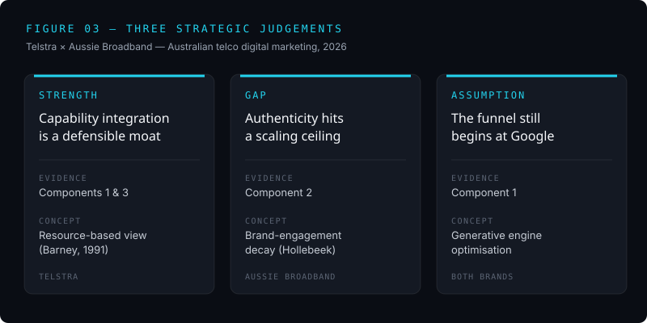

03 / Knowing the terrain
I've already studied the market Optus competes in
For my digital marketing portfolio I analysed Australian telco — Telstra, the incumbent, against Aussie Broadband, the challenger — across four lenses: search intent, content and engagement, conversion design, and strategic synthesis.
The core contrast
Telstra wins on capability integration: it dominates branded and high-intent search, and the My Telstra app (11 million-plus downloads, 98% in-app query resolution) extends connectivity into a four-driver value system — efficiency, complementarities, lock-in, novelty. Aussie attacks from upstream: low on brand search, it captures the evaluative middle through comparison platforms, and earns trust through executive Reddit AMAs — a brand-community play an incumbent can't credibly fake.
The frameworks I used
- Chaffey and Ellis-Chadwick's consumer decision journey — to separate informational, evaluative, and transactional search intent.
- Brand community theory (Muniz and O'Guinn) — to explain why Aussie's participation earns loyalty rather than just attention.
- Levitt's total product and Amit and Zott's online value drivers — to read what Telstra's conversion design is really doing.
- The resource-based view (Barney) — to judge what's genuinely defensible versus merely copyable.
My three judgements
I closed with three contestable judgements, each grounded in observable evidence rather than asserted — a strength, a gap, and an assumption both brands are quietly betting on.

Why this matters for Optus
Optus is an incumbent like Telstra. Understanding how a challenger like Aussie attacks on authenticity — and exactly where that attack runs out of room as it scales — is the kind of competitive intelligence a brand team uses to defend and grow.
I can also build a brand from zero
For a separate unit I helped create One Shot, a Gen-Z energy-and-electrolyte capsule, owning the brand experience end to end. So I'm comfortable on both sides — reading an established brand's digital strategy and building a new one.